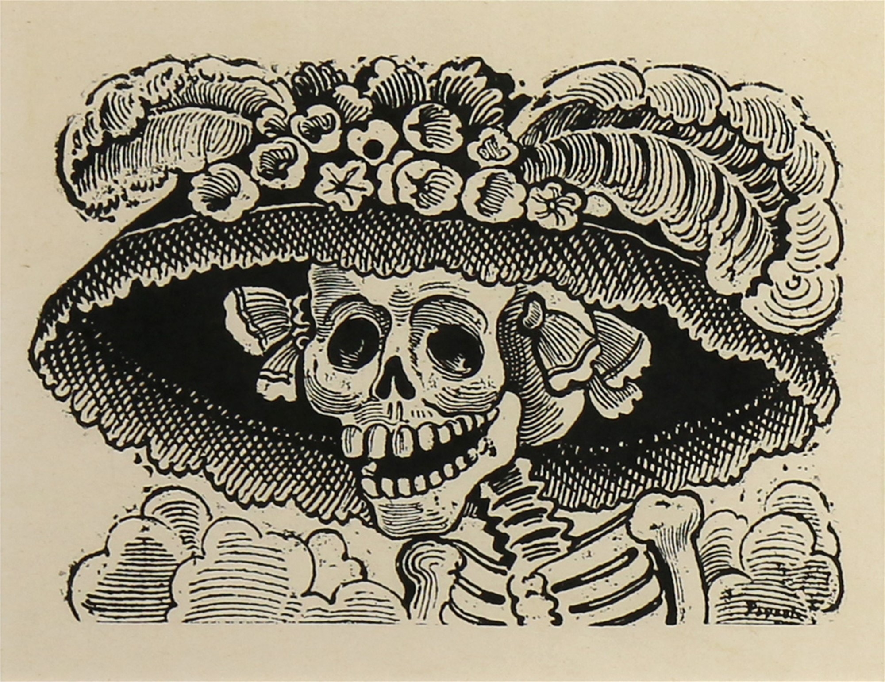
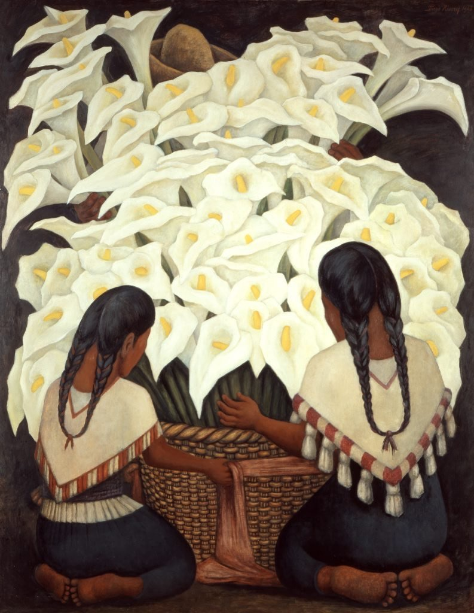
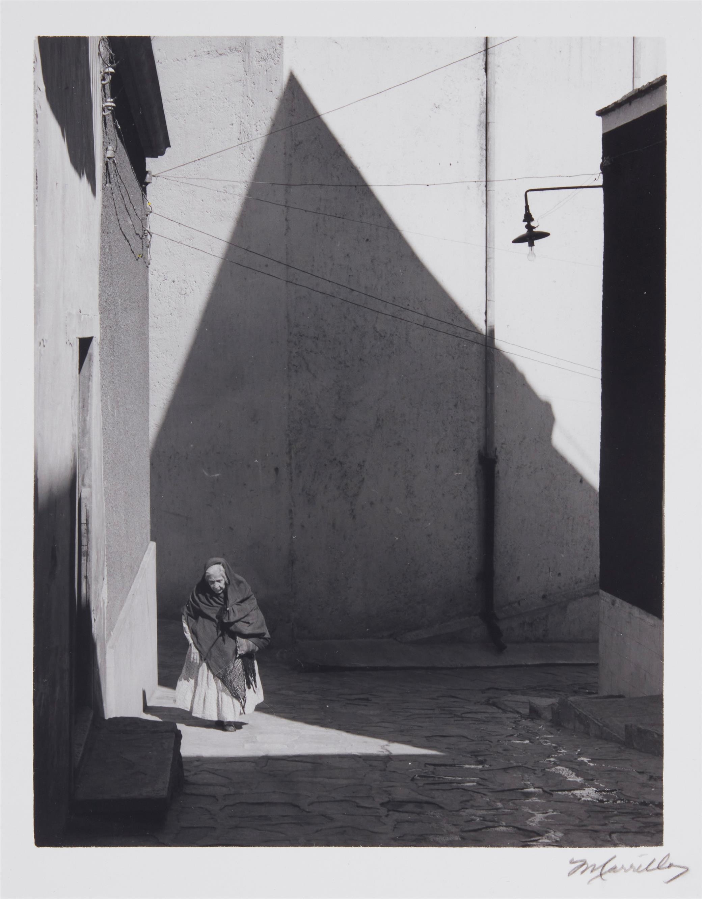
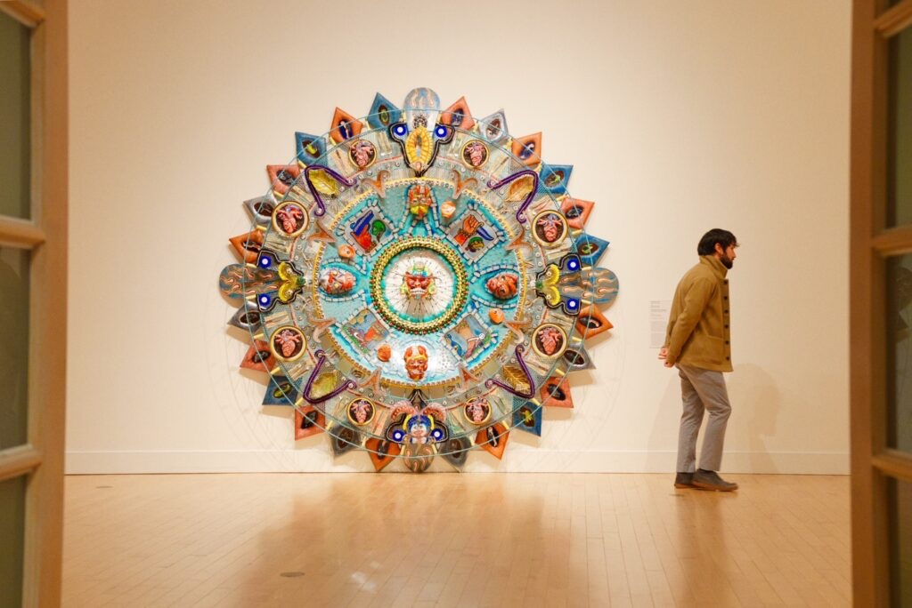
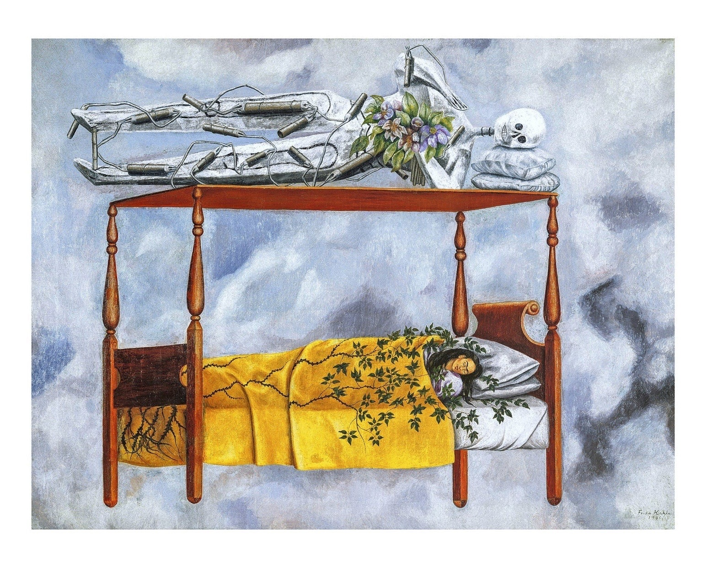

Mexico's Artists

José Guadalupe Posada was a Mexican illustrator and printmaker, renowned for his satirical and
politically charged engravings. Born in 1852, Posada is best known for his calaveras, or skulls,
which became iconic symbols of Mexican culture, especially during the Day of the Dead celebrations.
His most famous creation, La Catrina, a skeletal figure dressed in elaborate European attire, critiqued
the Mexican upper class's obsession with European fashion and customs. Posada's work profoundly influenced
Mexican art, serving as a bridge between traditional folk art and modern political commentary. His legacy
endures in the vibrant and often rebellious spirit of contemporary Mexican art.

Diego Rivera, born in 1886, was one of Mexico's most prominent muralists and a pivotal figure in the country's
art history. Rivera's large-scale murals, often depicting Mexican society and history, were infused with his
passionate belief in social justice and his commitment to the working class. His works, such as the murals in
the National Palace and the Ministry of Public Education in Mexico City, narrate the struggles and triumphs of
the Mexican people. Rivera's vibrant, dynamic compositions and his ability to blend European modernism with Mexican
themes made him a leading figure in the Mexican Muralism movement. His influence extended beyond art to politics and
education, reflecting his belief in art as a tool for social change.

Manuel Carrillo was a Mexican photographer whose work captured the essence of Mexican rural life in the mid-20th century.
Born in 1906, Carrillo started his photography career relatively late in life but quickly established himself as a master
of the medium. His black-and-white photographs are celebrated for their poignant portrayal of everyday scenes and the dignity
of his subjects. Carrillo's images often focus on the indigenous people of Mexico, emphasizing their cultural richness and
resilience. Through his lens, Carrillo documented the beauty and hardships of rural life, preserving a crucial aspect of Mexican
heritage for future generations.

Einar and Jamex de la Torre are contemporary Mexican-American artists known for their innovative glasswork and mixed-media installations.
Born in Guadalajara, the brothers moved to California, where they developed a distinctive artistic style that blends Mexican folk art with
modern pop culture and social commentary. Their work often features vibrant colors, intricate patterns, and a playful yet critical examination
of cultural identity and consumerism. The de la Torre brothers' pieces challenge viewers to reconsider their perceptions of tradition and
modernity, creating a dynamic dialogue between the past and the present. Their contributions have brought new perspectives to the world of
contemporary art, particularly within the Latino community.

Frida Kahlo, born in 1907, is one of Mexico's most celebrated and enigmatic artists. Her deeply personal and often surreal paintings explore
themes of identity, pain, and the human experience. Kahlo's life was marked by physical suffering due to a severe accident in her youth, which
influenced much of her work. Her self-portraits, characterized by bold colors and symbolic imagery, reveal her inner world and struggles. Beyond
her art, Kahlo was an active supporter of Mexican culture and politics, aligning herself with the country's indigenous heritage and leftist movements.
Her legacy extends far beyond her paintings, as she has become a global icon of resilience, feminism, and artistic authenticity.